Statistics
Packages
Total 134 packages, 117 of them are standard packages.
Total 850 source files, 798 of them are Go source files.
Averagely,
- each package contains 6.39 source files,
- each Go source file imports 2.52 packages,
- each package depends 6.11 other packages.
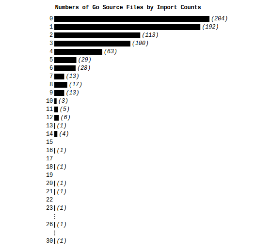
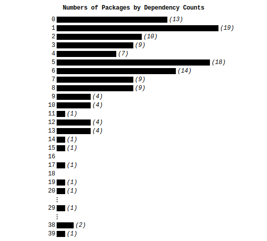
Types
Total 790 exported type names, 2 of them are aliases.
In them, 688 are composite types and 102 are basic types.
In the basic types, 82 are integers (34 are unsigneds).
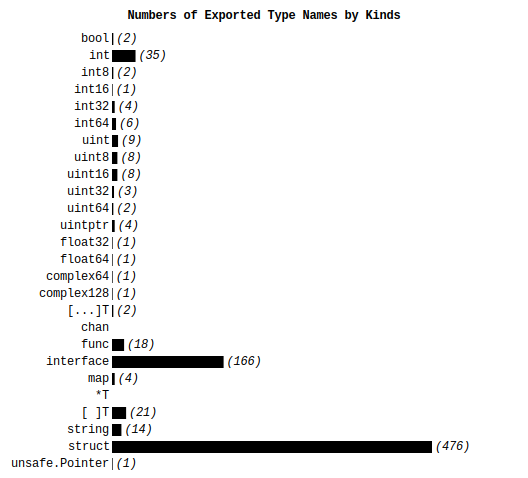
In 476 exported struct types, 35 have embedded fields,
and 29 have promoted fields.
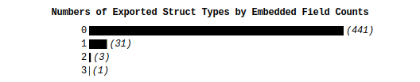
On average, each exported struct type has
* 4.97 fields (including promoteds and unexporteds),
* 4.50 explicit fields (including unexporteds),
* 3.61 exported fields (including promoteds),
* 3.29 exported explicit fields.
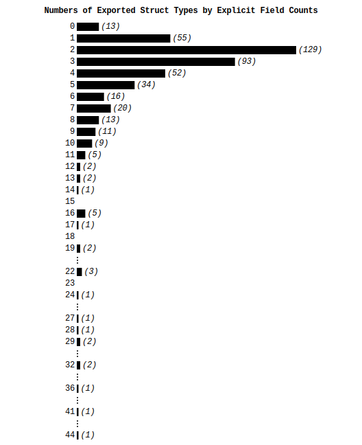
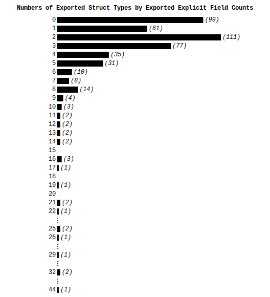
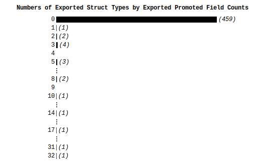
Averagely,
- for exported non-interface types with at least one exported
method, each of them has 5.09 exported methods.
- each exported interface type specified 2.35 exported methods.
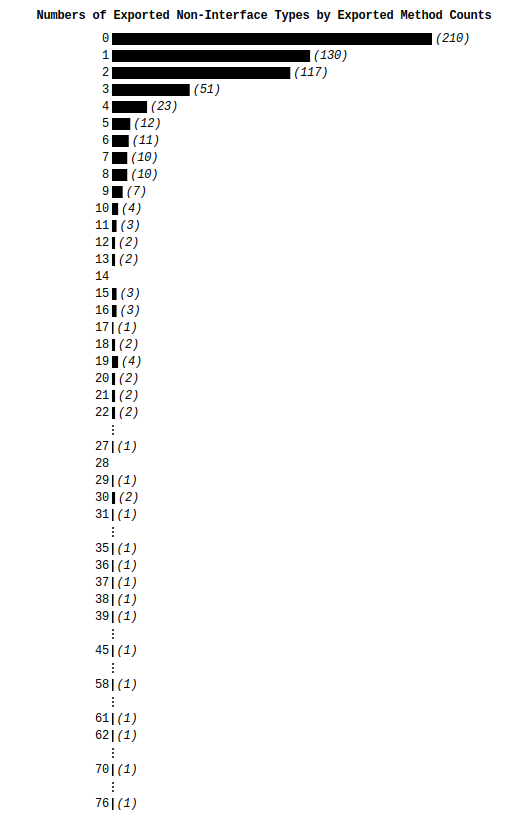
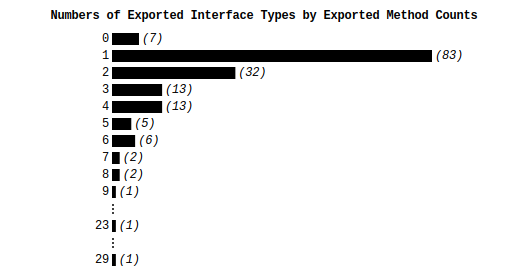
Values
Total 453 exported variables and 2518 exported constants.
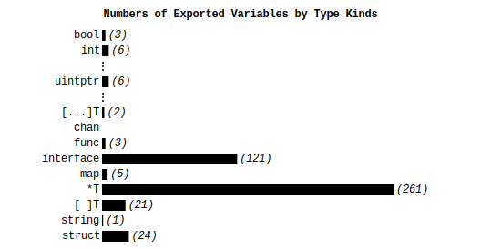
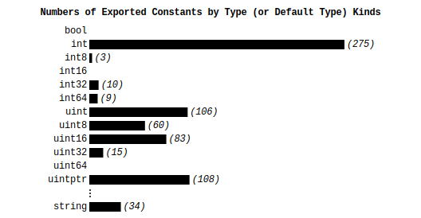
Total 1408 exported functions and 1850 exported explicit methods.
On average, each of these functions and methods has
1.11 parameters and 1.11 results. For 950 (29%) of these
functions and methods, the last result types are error.
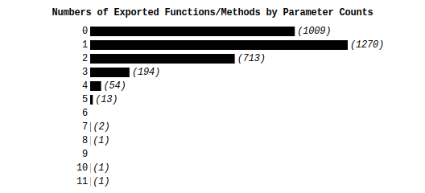
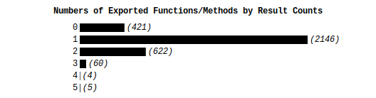
Others
The average length of exported identifiers is 9.03.
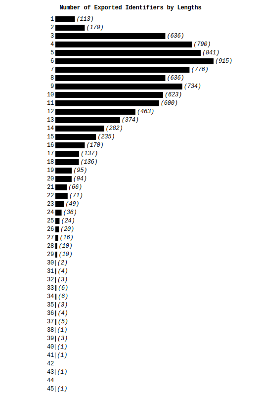
 |
The pages are generated with Golds v0.1.6. (GOOS=darwin GOARCH=amd64)
Golds is a Go 101 project and developed by Tapir Liu.
PR and bug reports are welcome and can be submitted to the issue list.
Please follow @Go100and1 (reachable from the left QR code) to get the latest news of Golds. |